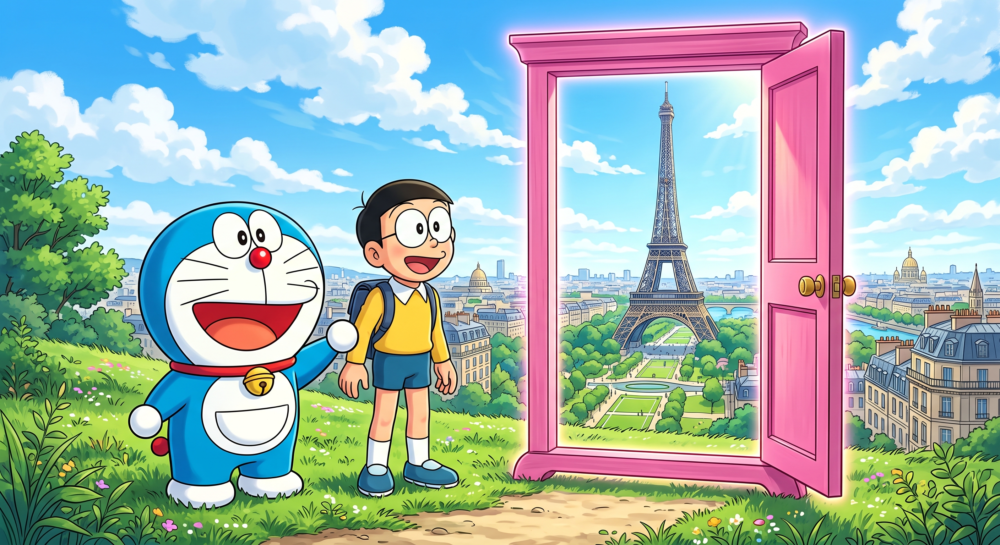
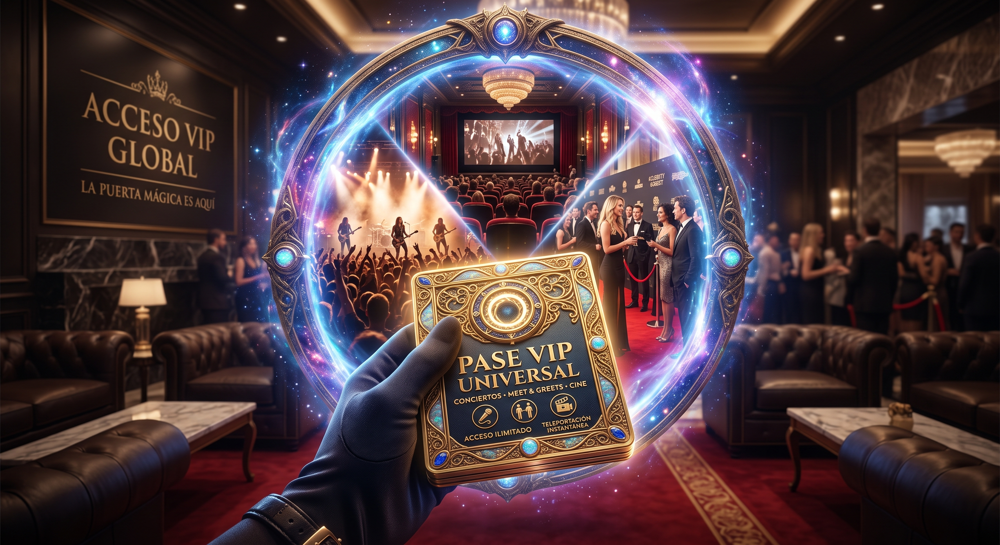
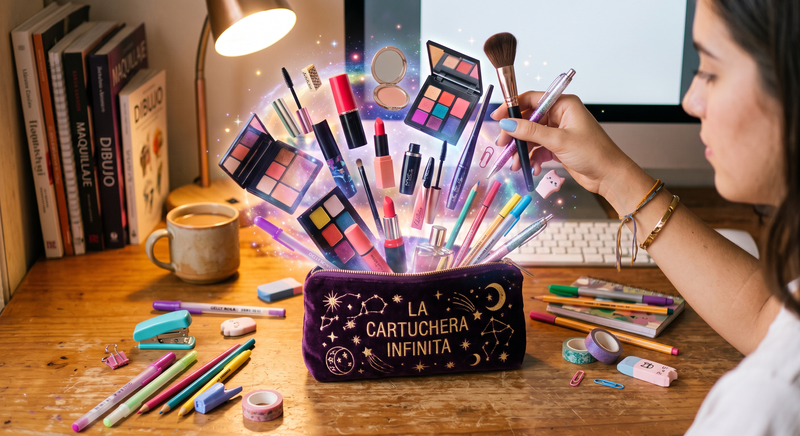
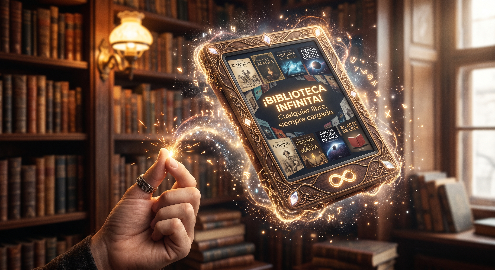
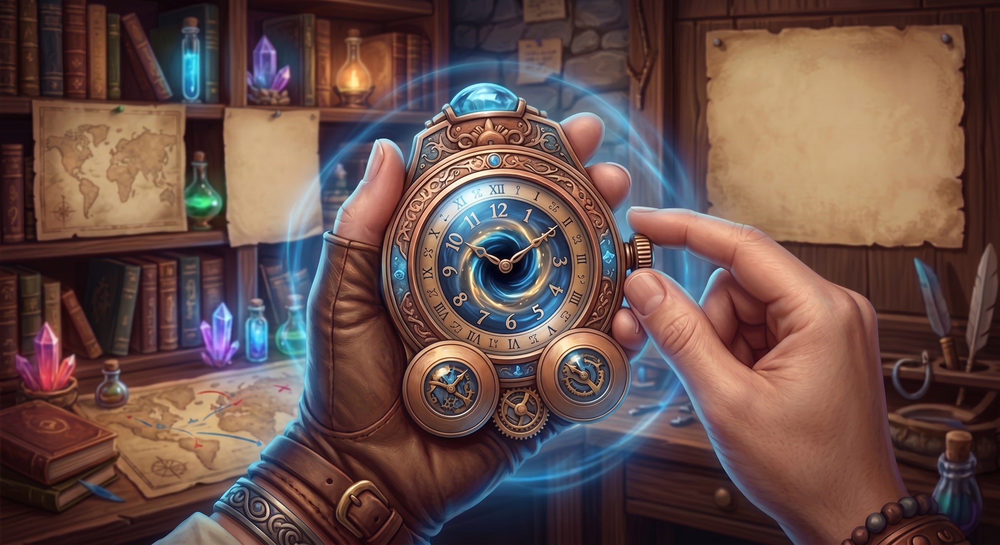
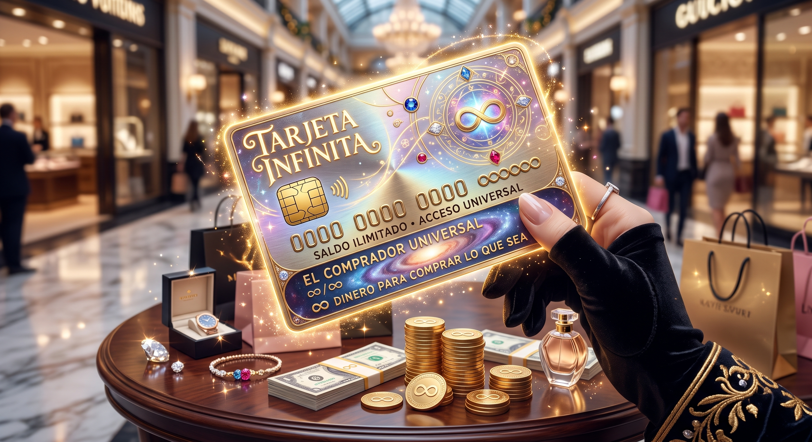

Día 7: Regalos imposibles
Para el día de hoy me vengo un poco a la fantasía. Yo creo que si pudiera regalarte cualquier cosa en el mundo, no me limitaría a una sola. Pienso que una persona tan versátil se merece algo igual de versátil, así que te regalaría el bolsillo de Doraemon. Podrías ocupar esa puerta mágica para conocer todo lo que quieras, comprarte un cafecito en París, un mochi en Corea o un ramen en Japón.

La verdad no sé si las siguientes cosas existan en el bolsillo de Doraemon, pero lo que yo pondría ahí exclusivamente para ti sería:
🎟️ Un pase VIP universal:
Para que puedas entrar a cualquier concierto, meet and greet o cine. Total, con la puerta mágica nada te quedaría lejos y podrías pasar en todo lugar.

👝 Una cartuchera infinita:
Esa que metes la mano y sale cualquier maquillaje que necesites o imagines, pero no solo eso, cualquier objeto que quepa en una cartuchera lo podrías sacar de ahí.

📖 Un Kindle mágico:
Este tendría cualquier libro que quieras leer, además de contar con una batería infinita y la habilidad de aparecer y desaparecer con solo un chasquido de tus dedos.

⌚ Un relojito del tiempo:
Para que puedas adelantar y retroceder el tiempo a tu voluntad. Así podrías seguir con tu rutina y todo lo que tienes que hacer, pero también darte el tiempo que mereces para disfrutar de todo lo que te gusta usando tus otras herramientas mágicas.

💳 ¿Una tarjeta infinitaaaaaaaaa?
Hay un objeto que dudé un poco en meter en ese bolsillo mágico y es una tarjeta infinita. Porque si bien sé que te gusta comprar y darte tus gustitos, también sé lo mucho que te esfuerzas. Te gusta conseguir las cosas por ti misma y no tener nada regalado, porque eres una mujer súper luchadora JAJAJA.

Bueno, eso es todo por el día de hoy.
¡Nos vemos mañana! 💜